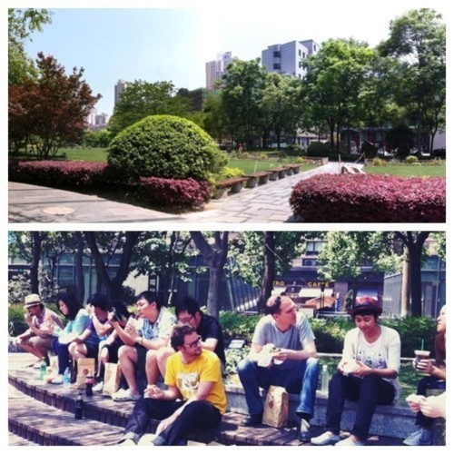

Tue, 10 May 2011 14:07:00 · picnic · shanghai · china
lunch break with the art team of trigger

Lunch break with the art team of Trigger (Shanghai), at the Liyuan park across the office. A short picnic under the scorching heat…. Fun times!